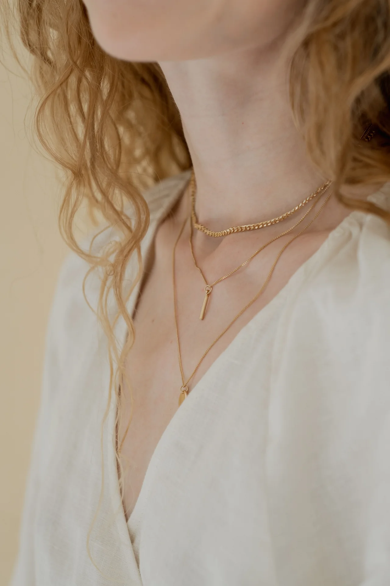

Schmuck &
Edelsteine.
Willkommen bei Feingold Vogel. Entdecken Sie die Welt von Schmuck und Edelmetallen. Dietmar Vogelmann ist Ihr persönlicher Ansprechpartner.
Feingold Vogel entdecken
Die Welt von
Feingold Vogel.
Vom Schmuckstück über den Edelstein bis zum Feingehalt: Lernen Sie die Themen näher kennen.


Ihr persönlicher Ansprechpartner
Dietmar
Vogelmann.
Auf TikTok und Instagram spricht Dietmar über Gold, Schmuck und seine Arbeit. Bei Feingold Vogel erreichen Sie ihn direkt – für Ihre Fragen und eine persönliche Beratung.
Dietmar kennenlernenDer Onlineshop
ist in Vorbereitung.
Das Sortiment und aktuelle Angebote folgen mit dem Shopstart. Für Ihre Fragen zu Schmuck, Edelsteinen und Edelmetallen ist Dietmar schon jetzt erreichbar.
Persönlich Kontakt aufnehmen